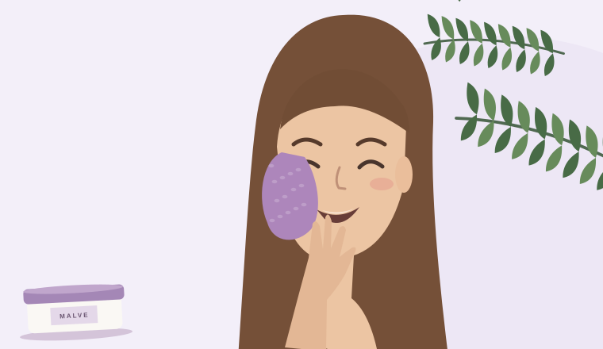
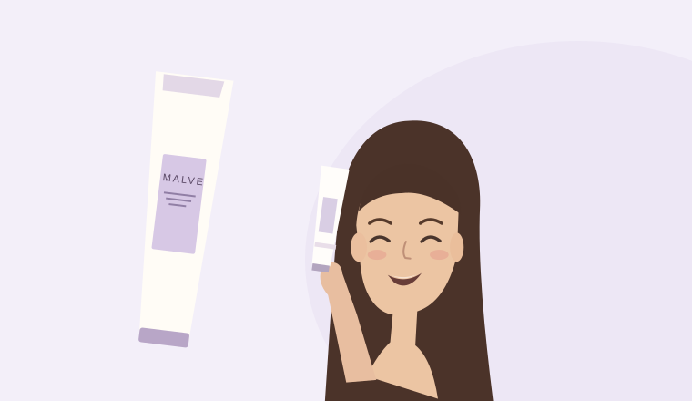
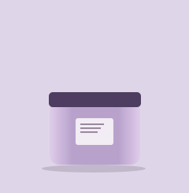
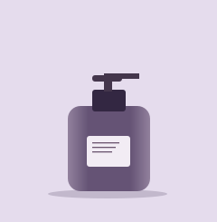
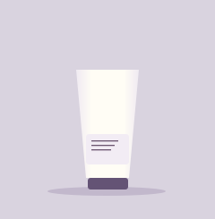

بافت سبک
از پاککننده تا کرم، بافتی برای هر مرحله از روتین.
مراقبتی آرام با روغنهای گیاهی و عصارهٔ پنیرک؛ برای یک روتین ساده و روزانه.


ترکیب روغنهای گیاهی و عصارهٔ پنیرک، برای لحظههای کوتاه مراقبت از خود.
از پاککننده تا کرم، بافتی برای هر مرحله از روتین.
مقدار کم را آرام روی پوست مرطوب پخش کن.
۳۹۰ هزار تومان

۳۲۰ هزار تومان

۴۸۰ هزار تومان

۱۷۰ هزار تومان
ابتدا پاککننده را انتخاب کن و بعد با توجه به نیاز پوستت مرطوبکننده را اضافه کن.
درب ظرف را ببند و روی قفسهای خشک و دور از آفتاب قرار بده.
سبد را باز کن تا فهرست محصولات انتخابی و جمع آنها را دریافت کنی.